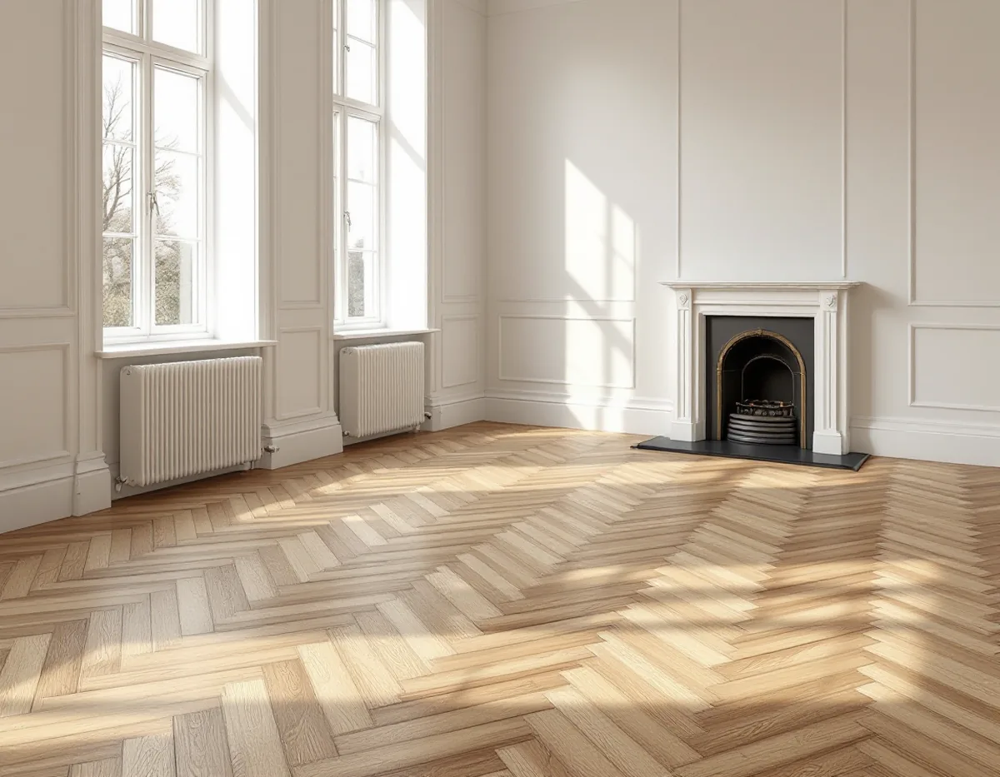
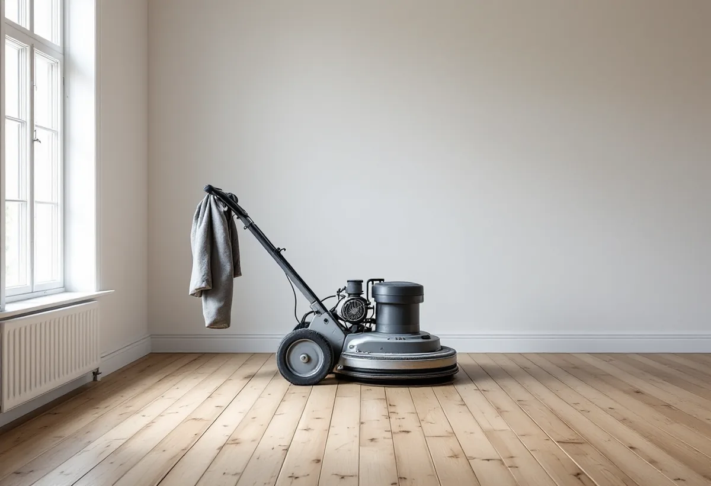
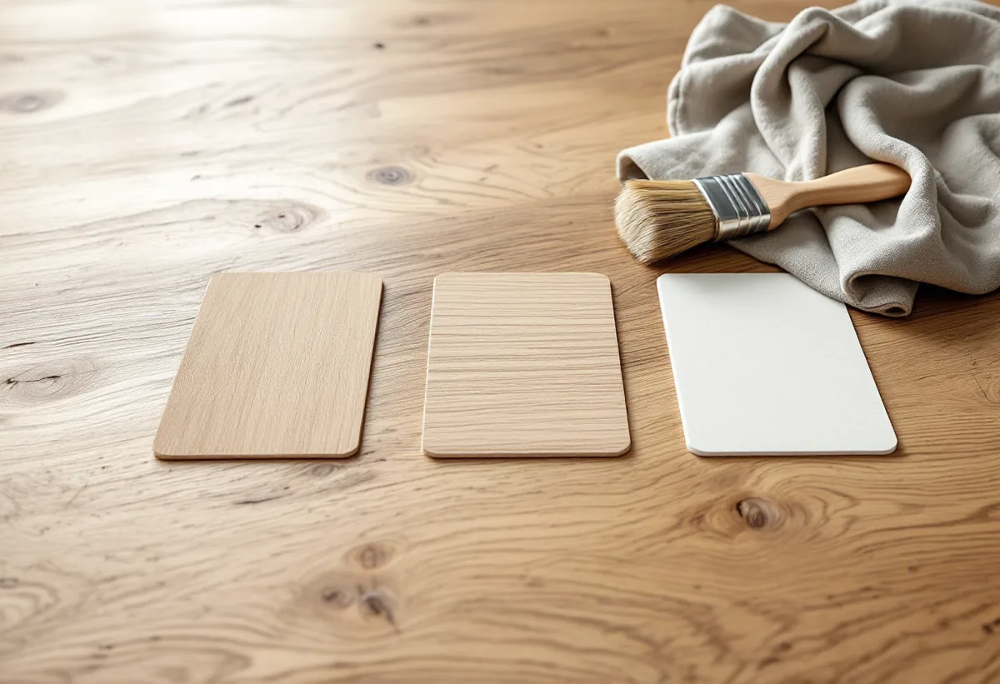

Platsbesök
Vi tittar på golvet, kontrollerar slitskiktet och mäter ytorna. Besöket är gratis.

Geal Entreprenad AB slipar parkett, brädgolv och trätrappor i villor, radhus och lägenheter i hela Stockholm och avslutar med lack, olja, hårdvaxolja eller lut och såpa.
Beskriv jobbet kort.
Något blev fel. Kontrollera uppgifterna eller ring 08 12 410 276.
Vi tittar på jobbet på plats innan du får offert.
Du ser vad som ingår och vad det kostar.
Vi drar av ROT direkt och sköter ansökan.
Geal Entreprenad AB, Bromma. Org.nr 559303-7566.

Du får ett gratis platsbesök och ett skriftligt kostnadsförslag, och ROT-avdraget dras direkt på fakturan. På den här sidan ser du vad som ingår, hur arbetet går till steg för steg, vad priset beror på och vilka golv som går att slipa.
En golvslipning tar bort den gamla ytbehandlingen och det översta, slitna träet, så att repor, gråa gångstråk och gulnad lack försvinner. Golvet slipas med bandmaskin i flera steg, från grovt till fint papper, och kanter och hörn tas med kantslip så att ytan får samma struktur ända ut till listen. Golvbranschens riktlinjer för slipning, SLIP 22, säger att finslipningen ska göras i träets längdriktning och att inga slipränder får finnas kvar annat än efter slutpappret.
Före finslipningen lagar vi det som slipningen inte tar bort: lösa stavar limmas, uppstickande spik dras eller slås ned, djupa hack och kvisthål fylls och enstaka skadade brädor eller stavar byts. Sedan dammsugs golvet noga och ytbehandlas i flera lager. I ett vanligt uppdrag ingår också att vi skyddar angränsande rum, tar hand om slipdammet och går igenom skötseln av den nya ytan med dig.
Ska ett nytt golv läggas i stället, eller är du osäker på om det gamla går att rädda, finns mer under golvläggning i Stockholm.

Massiva brädgolv av furu, gran eller ek och massiv stavparkett tål i regel flera slipningar, eftersom det finns mycket trä ovanför spontens överkant. Lamellparkett har ett tunnare toppskikt av ädelträ på en stomme av annat material, och där avgör slitskiktets tjocklek om en slipning till är möjlig. Laminat är en tryckt yta och går inte att slipa.
Vi mäter innan vi lovar något. Vid platsbesöket lyfter vi en tröskel eller en golvlist, eller tittar i en springa, och ser hur mycket trä som finns kvar. På äldre lamellgolv finns en risk som Golvbranschen beskriver som stavsläpp: enstaka stavar i toppskiktet kan lossna när golvet slipas. Det berättar vi om i förväg, så att du vet vad som kan hända och hur det lagas.
Mönsterlagda golv som fiskben och rutmönster slipas på ett eget sätt. Träet ligger åt olika håll, och enligt SLIP 22 slipas ett sådant golv normalt först diagonalt och sedan i rummets längdriktning eller från det håll ljuset kommer. Trappsteg och vilplan i trä slipas med mindre maskiner och för hand.
Efter slipningen är träet oskyddat, och valet av yta bestämmer både utseende och skötsel. Lack lägger en film ovanpå träet. Den tål slitage i hall och kök, är lätt att torka av och finns i olika glansgrader. Olja tränger ned i träet och ger en mattare yta som känns som trä. Ett oljat golv kan underhållas punktvis, till exempel i ett gångstråk, utan att hela rummet slipas om. Hårdvaxolja ligger mellan de två.
Lut och såpa är den traditionella behandlingen på furu och gran och ger en ljus, matt yta. Luten är frätande, så angränsande ytor skyddstäcks, och Golvbranschens riktlinjer avråder från lack på ett lutat golv. Vill du ändra kulör, ljusare eller mörkare, görs det med pigment i oljan eller hårdvaxoljan, och vi gör då en provyta på ditt golv som du godkänner innan hela ytan behandlas.
Riktlinjerna anger också under vilka förhållanden ytan ska läggas. Träet ska vara torrt, och rummet ska hålla normal rumstemperatur under behandlingen. Har golvet golvvärme sänks den före arbetet och höjs stegvis efteråt.
Golvslipning dammar och låter. Enligt Golvbranschens riktlinjer bör slipningen göras med partikelseparator eller cyklondammsugare med HEPA-filter, och den som slipar använder andningsskydd i klass P3 och hörselskydd. Vi stänger och tätar dörrar till övriga rum, så att dammet stannar där arbetet pågår.
Slipdamm och oljiga trasor kan självantända. Riktlinjerna för underhåll säger att trasor, rondeller och slipdamm som varit i kontakt med oxiderande oljor ska läggas i vatten direkt efter användning. Dammsäcken töms och tas ut ur bostaden när arbetsdagen är slut.
I en bostadsrätt hör golvet oftast till det du själv ansvarar för, men föreningens ordningsregler bestämmer när bullrande arbeten får pågå. Vi lägger slipdagarna efter de reglerna och går igenom tidplanen med dig före start, så att du kan berätta för grannarna vilka dagar det låter.
Ett trägolv tål bara ett visst antal slipningar, så den billigaste slipningen är den som inte behöver göras. Ett lackat golv kan fräschas upp med lackrefresher eller lackas över innan slitaget har gått igenom lacken och ned i träet. Före en överlackering görs ett vidhäftningsprov, eftersom rester av vax, polish eller olämpliga rengöringsmedel kan hindra den nya lacken från att fästa.
Ett oljat golv underhålls med ny olja där ytan har blivit torr och matt, oftast i gångstråken, och städas med en golvsåpa som återfettar. Ett såpat golv skuras med såpa. Oavsett yta gör möbeltassar, en dörrmatta som fångar gruset och torr eller lätt fuktig städning mer för golvets livslängd än något annat. Vilken skötsel som gäller för just din yta går vi igenom när arbetet är klart.
Vi tittar på golvet, kontrollerar slitskiktet och mäter ytorna. Besöket är gratis.
Slipning, lagning och ytbehandling står som egna poster, med ROT-avdraget uträknat.
Rummen töms, spik tas bort, lösa stavar limmas och dörrar till övriga rum tätas.
Grov-, mellan- och finslipning med dammavskiljare, och kantslip längs väggar och i hörn.
Lack, olja, hårdvaxolja eller lut läggs i flera lager med torktid emellan.
Vi går igenom golvet med dig och lämnar skötselråd för den yta du har valt.
Ett golvjobb består av dagar med maskiner och dagar då lacken eller oljan torkar och rummet står tyst. Hur många dagar det blir beror på ytan, antalet rum, hur mycket som ska lagas och vilken ytbehandling du väljer. En pigmenterad produkt behöver längre torktid mellan lagren än en opigmenterad, och lut ska ligga ett dygn innan överskottet jämnas av.
Enligt Golvbranschens riktlinjer för lackering kan rummet normalt möbleras efter minst ett dygn, medan mattor och andra täta material bör vänta minst en vecka och starkt slitage minst två veckor. Tidplanen för just ditt golv står i kostnadsförslaget.
Att slipa golv finns med bland Skatteverkets exempel på rotarbeten, både i småhus och i bostadsrätt. I bostadsrätten ska du ha underhållsansvaret för golvet enligt föreningens stadgar, och arbetet ska göras inne i bostaden. Även fritidshus räknas som småhus.
Avdraget är 30 procent av arbetskostnaden, högst 50 000 kr per person och år och högst 75 000 kr tillsammans med rutavdrag. Avdraget gäller bara arbetad tid på plats hos dig – lack, olja och resor ger inget avdrag. Vid en golvslipning är det mesta av kostnaden arbete, och därför får avdraget stor betydelse. Geal drar avdraget direkt på fakturan och ansöker om utbetalningen hos Skatteverket, så du betalar bara din del.
Vi publicerar inga prislistor för golvslipning, eftersom två golv med samma yta kan kräva helt olika mycket arbete. Det som väger tyngst är golvytan och antalet rum, golvets skick och hur mycket som ska lagas före slipningen, vilken ytbehandling du väljer och hur många lager den kräver, samt om trappa, trösklar och lister ingår. Ett golv som ska fram under en gammal matta kräver mer förarbete än ett lackat parkettgolv.
Efter platsbesöket får du ett skriftligt kostnadsförslag där arbete och material står var för sig och ROT-avdraget är uträknat. Besöket och kostnadsförslaget är gratis.
Nytt golv när det gamla inte går att slipa.
Golvläggning i Stockholm →Trösklar, lister och trappor.
Snickare i Stockholm →Väggar och snickerier före golvet.
Målare i Stockholm →Golvet som del av en större renovering.
Villarenovering →Eller ring 08 12 410 276, mån–fre 08–17.
Beskriv jobbet kort.
Något blev fel. Kontrollera uppgifterna eller ring 08 12 410 276.